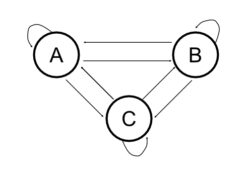
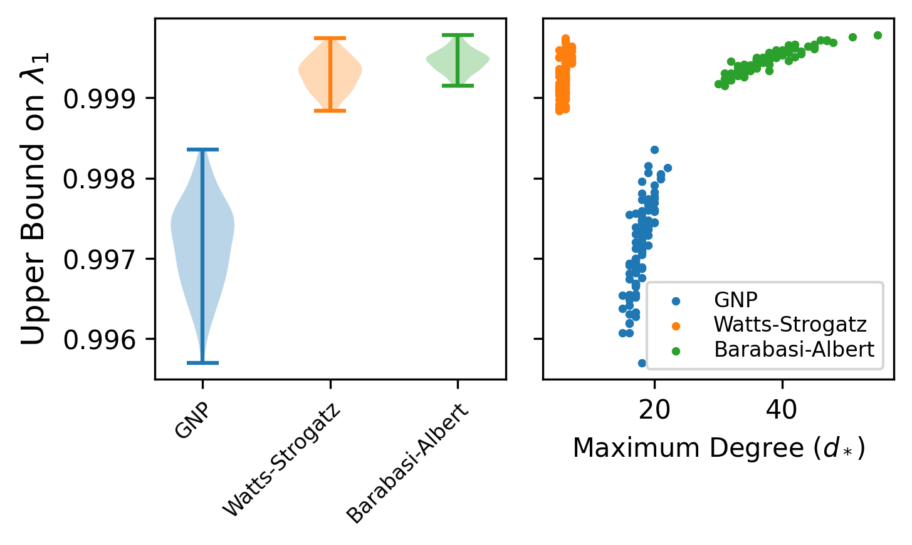

Diaconis-Stroock Eigenvalue Bounds for Markov Chain Convergence¶
Markov Chains¶
Markov Chains are a fundamental stochastic processes that are used in a wide variety of fields. They can be represented by state machines where the probability of moving between the states are “transition” probabilities. Markov Chains follow the Markov Property, and below we provide a depiction of a Markov Chain as a graph.
{kind=link}
For the Markov Chain above, we can create a matrix out of the transition probabilities that we move from a starting state to any other state as the following matrix:
Now a natural question to ask is whether if we let this state machine play out over infinite time, would it reach some sort of equilibrium? This equilibrium on the states is the stationary distribution of the markov chain.
The stationary distribution can be described by a distribution on the states, \(\mathbf{\pi}\), a column vector that obeys the following equality:
How might we approach finding this stationary distribution though? There are three ways we might try: (1) take the transition matrix \(P\) to a very high power and extract a row, (2) solve via a set of global-balance equations, or (3) solve for the stationary distribution via eigen-decomposition. The first approach is quite unprincipled (because defining the power seems difficult), and the second approach is explained here, so we will go with the eigen-decomposition.
We can describe the eigen-decomposition as the following equation:
Where \(A\) are all of the left-eigenvectors, and \(\lambda\) are all of the eigenvalues. If \(\lambda = 1\) then we would exactly have the equation for the stationary distribution. In fact, there is a nice property about the ordering about the eigenvalues of \(\mathbf{P}\) in that:
From all of the above we have a principled way to compute the stationary distribution of an arbitrary markov chain, supposing that we can calculate an eigen-decomposition of the transition probability matrix.[1]
It is nice that this stationary distribution is solvable, but we can also ask how fast the approach to the stationary distribution is. This is related to the difference between the first and second eigenvalues in the eigen-decomposition or \(| 1 - \lambda_1 |\). The general idea is that \(\lambda_1\) tells us how fast the largest of the vanishing terms (\(\lambda_i < 1\)) approach 0 and disappear.
Here we go over some theory and methods that pertain to random walks on graphs (and subsequently Markov Chains) to determine bounds on the value of the second eigenvalue \(\lambda_1\) and providing a bound on the convergence of Markov chains to their stationary distributions.
Eigenvalue Bounds via Poincare Inequalities¶
To start we need to actually define the graph, where there is an edge on \(\{x,y\}\) if \(Q(x,y) > 0\), where \(Q(x,y) = \pi(x)P(x,y)\). This means that an edge should exist if there is any probability of moving from state \(x\) to state \(y\). We can then define path lengths through the graph from node \(x\) to node \(y\) as :
, where \(Q(e) = Q(x,y)\) if \(e = {x,y}\) as a shorthand notation. Assuming the Markov Chain is irreducible, we know that paths exist from every state to every other state in the Markov Chain.
From this notion of paths through the graph, a further definition can be made:
, where the maximum is taken over all directed edges in the graph, and is summed over all paths that contain that maximal edge. This quantity can intuitively be thought of as finding the largest “bottleneck” in the flow of probability between the states of the Markov Chain that go through the directed edge \(e\). This is related to ideas about max-flow/min-cut and the Ford-Fulkerson algorithm.
Derivation of Poincare Bounds¶
If we define \(\phi (x)\) as a continuous function on the finite states of the Markov Chains \(x \in X\), we can explore the convergence of the Markov-Chain while accounting for a specific “value” or “weight” for each of the states.
In order to prove our upper-bound on the eigenvalue of \(\mathbf{P}\) we need to work with the Laplacian of \(\mathbf{P}\) which is defined as:
Where \(\beta_i\) are the eigenvalues of \(\mathbf{L}\). Following from previous work (Horn and Johnson), we can define the following:
Where \(Var(\phi)\) is the variance of \(\phi\) relative to \(\pi\) and
From the definitions of \(Var(\phi)\) and \(\kappa\) we can start our derivation:
Note that while the results above are elegant from a mathematical perspective, for actual practicality this is a little bit tricky since the quantity \(\kappa\) contains terms related to the stationary distribution! However we can bound \(\kappa\) in terms of structural elements of the Markov Chain graph thereby reducing our reliance on knowing the stationary distribution.
Eigenvalue Bounds via Graph Structure¶
To characterize the effect of graph structure on the eigenvalue bounds, we first define the properties of the graph \(G = (V,E)\) and a random walk from a node to any of its neighbors being only dependent on the degree of the node:
Due to this uniformity in choosing the next node, the stationary distribution of visiting a node \(x\) is the node’s degree over the total number of edges in the graph \(\pi(x) = \frac{d(x)}{2\|E\|} \) [2].
From there we can define:
We can then adequately bound \(\kappa\) just by properties of the random walk:
The term \(b\) describes the maximum number of paths that pass through the edge, a measure of which edge bottlenecks the graph. The term \( \gamma_* \) simply describes the longest path within the graph (in numbers of edges). \( d_* \) is the maximal degree of any node within the graph.
From our redefining the upper bound on \(\kappa\) we can turn to our redefinition of the first eigenvalue:
While the random-walk assumption may not be appropriate for all scenarios, it certainly holds in a large number of them and that is what makes this bound of use in practical scenarios. It also suggests that algorithmic methods to reduce any element of the denominator will result in faster mixing of the Markov-Chain towards stationarity. In principle, one approach is to artifically reduce the prevalence of “hubs” in the network to decrease the maximal degree of a node within the graph \( d_* \) since that value affects the bound with \(\mathcal{O}(d_*^{-2})\).
As an experiment, you can see what the effect of different simulated graph structures are on the second eigenvalue bound \(\lambda_1\). Provided a given graph \(G\), we can calculate the bounds as mentioned above to check for how close we can get to stationarity. From the brief experiment it appears that graphs where edges are placed according to a uniform probability have a slightly faster mixing rate than “small-world” networks that are randomly generated. For the full notebook details of the specifics of the experiment please see this gist.
{kind=link}
Implications¶
I first learned about these ideas on rates of Markov Chain convergence in the context of two very different models. The first was determining properties of genealogies when there is a specific form of population structure known as the “island model”. The island model is a population dynamic model where the migration matrix between a set of demes is fully-connected and has weights (migration rates) that are non-zero. However, the migration rates may be different by orders of magnitude, creating scenarios where different collections of “islands” or demes are more well connected.
The upper bound on the second eigenvalue of a random-walk in an \(n\)-deme island model derived by Matsen and Wakeley is:
Thus we can use the bounds proposed here to compute the upper bound on the convergence to the island model even if there is limited migration (e.g. where some components of the island model are well-connected but limited connectivity between components). Notably, Matsen and Wakeley use this bound to show that there is no dependence on the number of samples, but rather this can be used to show properties of the genealogies when there is an infinite number of demes (\(n \rightarrow \infty\) in our notation).
The second context was in Markov Chain Monte Carlo (MCMC) sampling distributions that have multiple modes. The primary problem with running a Markov Chain to sample from a multi-modal distribution is that if it gets “stuck” in a mode, it can be difficult to sample outside of the mode because the most likely proposal is to stay within that specific mode of the stationary distribution. In the graph-theoretic sense, it would be like having many small but dense sub-networks and there are very few connections between these small, dense networks so it is very difficult to randomly move between sub-networks. If we review the expression for the eigenvalue bounds that we saw before based on the graph structure we have:
These small-world networks have high node density (which increases the maximum degree of the node- \( d_* \)) as well as it being quite difficult to travel between them (increasing the maximum path length - \( \gamma_* \)). These two properties, particularly the increase of the maximum degree, really hurts the rate of convergence to the stationary distribution. To address this problem, one can leverage MCMC algorithms where one runs multiple MCMC chains with different levels of “heat”[3]. One can also ideally leverage the eigenvalue bounds to set a data-driven establishment of where to set the number of burn-in iterations for MCMC.